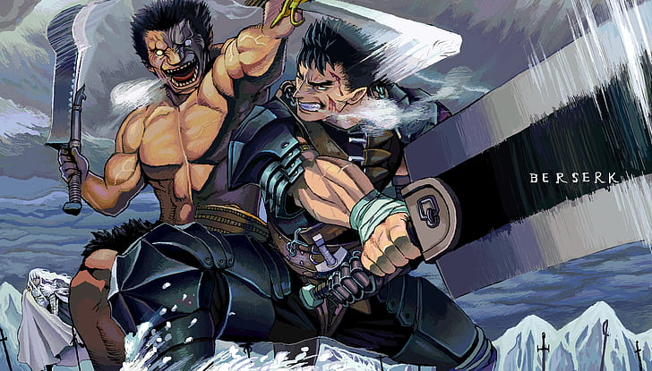
 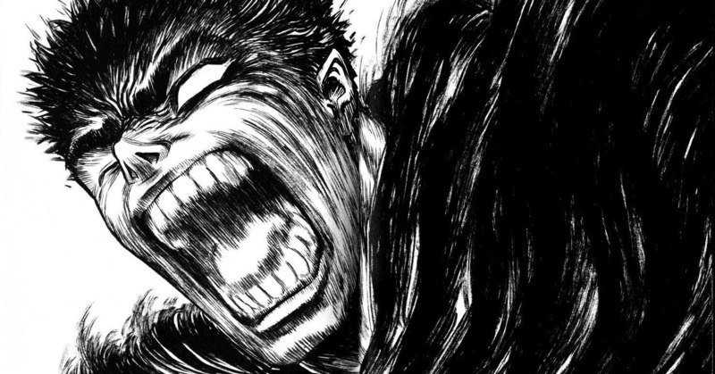
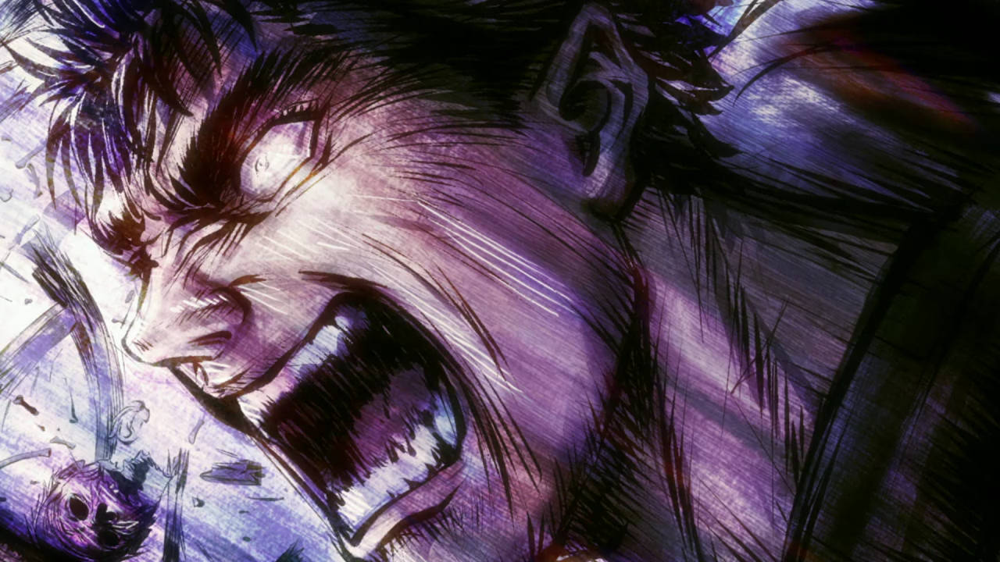
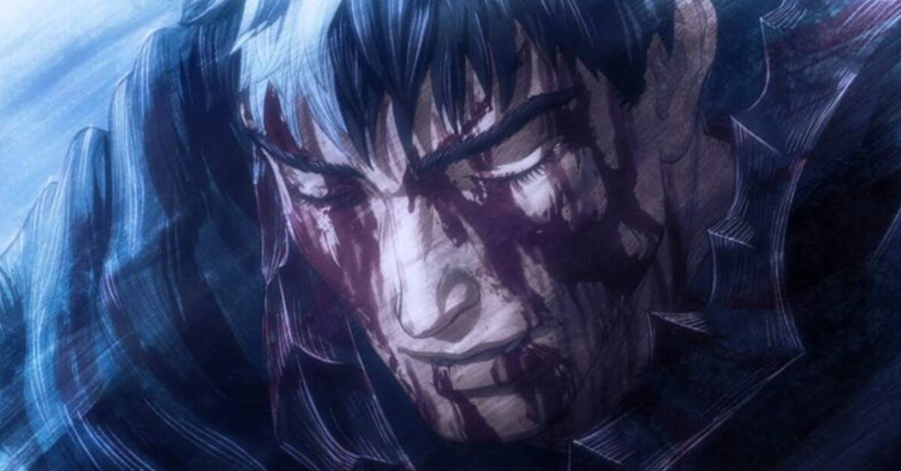
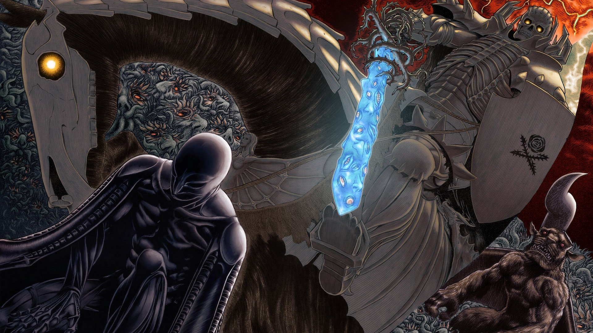
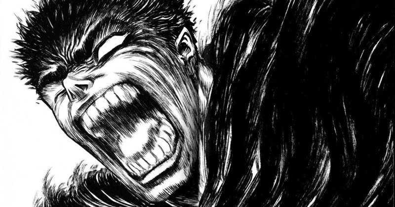
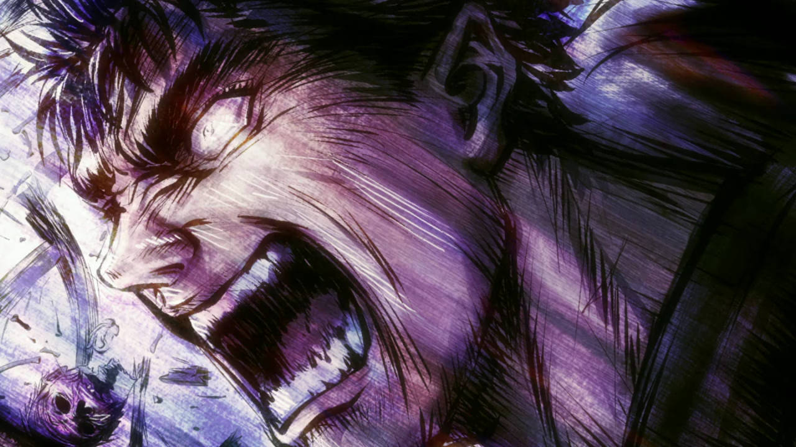
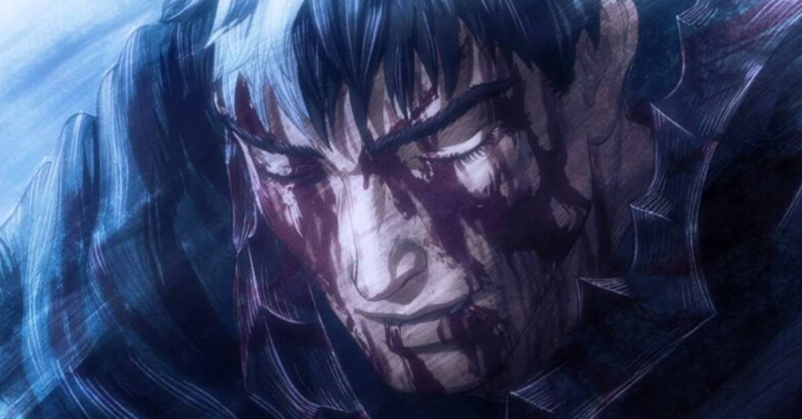
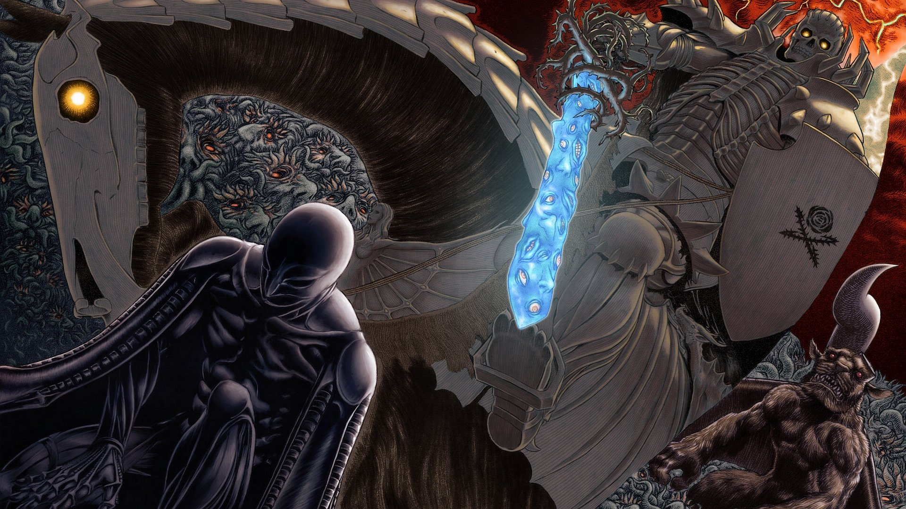
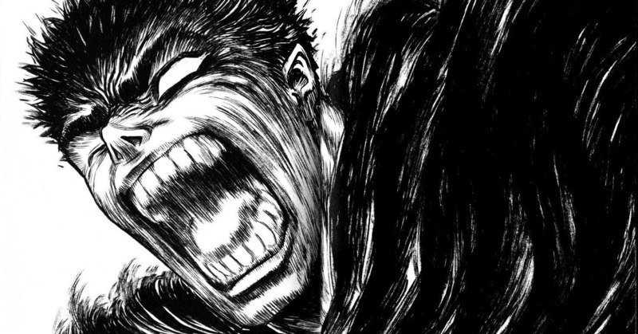
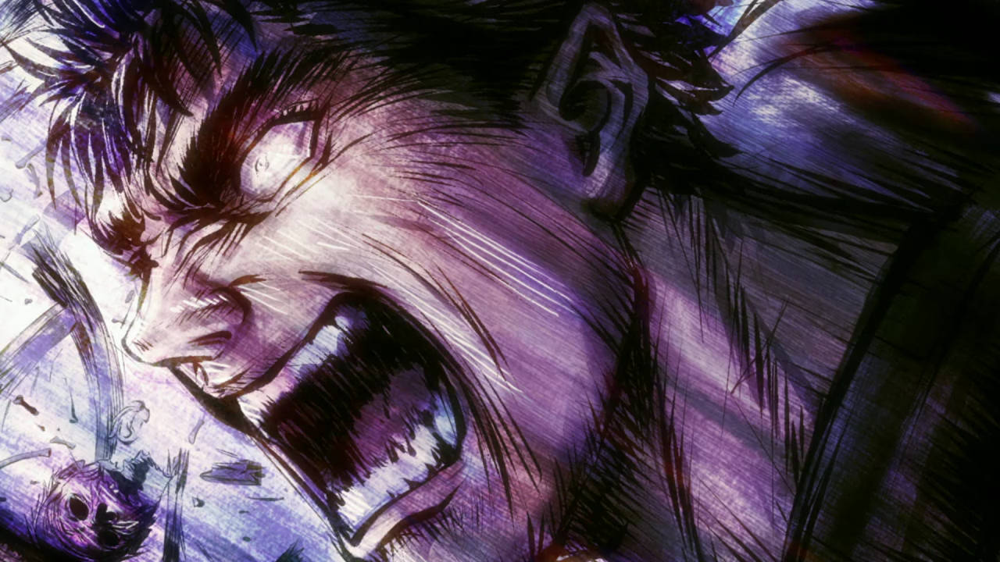
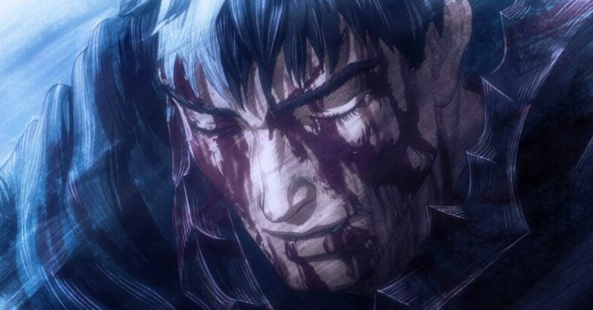
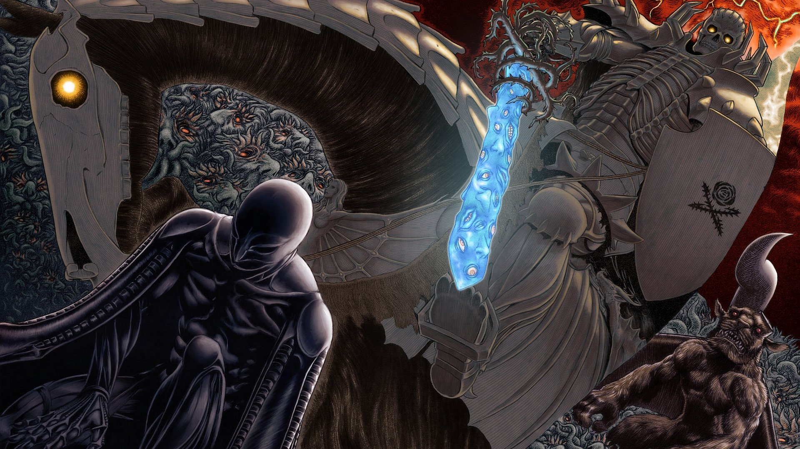
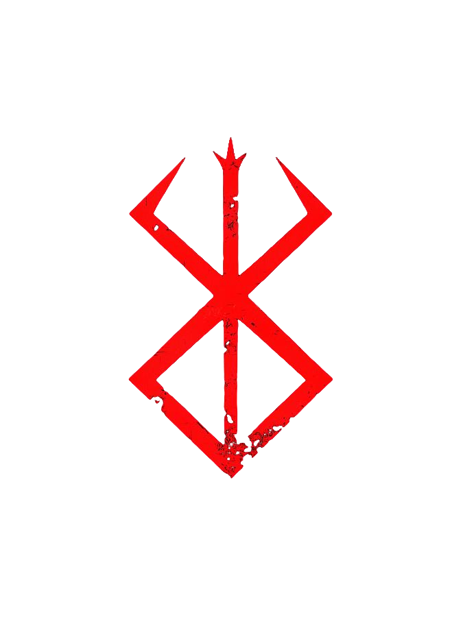
Se você busca muito alguma coisa, é certo que deixará outras no meio do caminho. Só me sinto vivo quando estou usando a minha espada. Humanos são fracos e morrem facilmente. Mas não importa o quão fracos somos, não importa o quanto somos torturados, não importa quanta dor sentimos, nós ainda queremos viver.